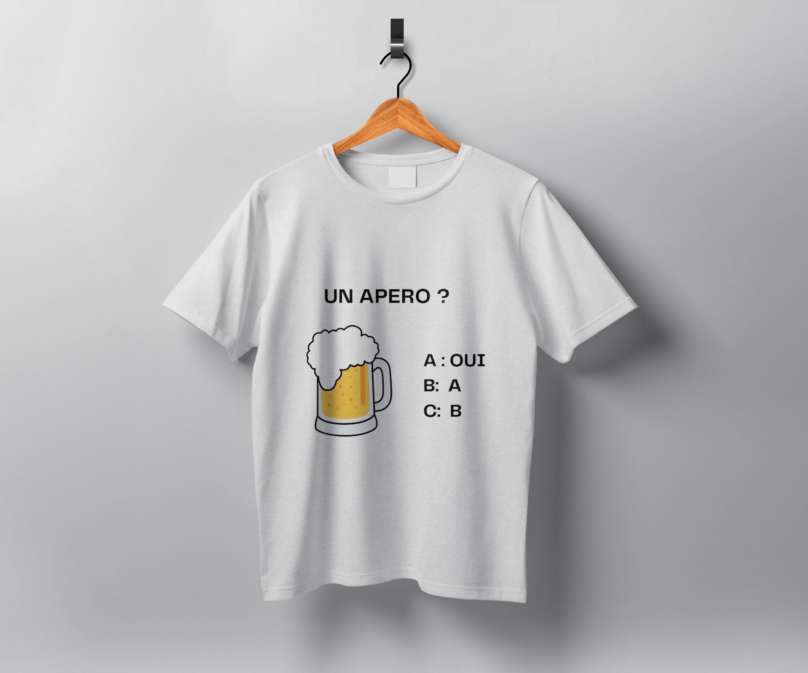

Podcast · Blog · Services linguistiques
Côtedes voix
Histoires, podcast, blog et services linguistiques professionnels — traduction, interprétation et plus. 100% Français, 100% Kenyan. Rejoignez la communauté !
Défiler
Voix

🇫🇷Français
🇰🇪Kenyan
